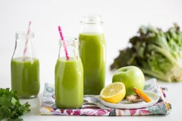

CONSEJOS DE UN DESAYUNO SALUDABLE Y AMIGO DE LA DIETA
El desayuno es una comida de suma importancia ya que es la primera comida que nuestro cuerpo ingiere tras ayunar durante horas. El desayuno es cable para encontrarnos con energía durante todo el día.
Hoy en día es muy habitual saltarse el desayuno debido a la falta de tiempo para prepararlo o porque se piensa que podemos “ahorrar calorías” y así poder perder peso. Pero saltarse el desayuno es uno de los mayores pecados nutricionales que podemos cometer. En este post le ayudaremos a encontrar la motivación para desayunar sano, ofreciéndole alternativas de desayunos saludables basados en productos integrales y naturales.
Empezar el día con un desayuno SEN hace que estemos más motivados y enfocados desde primeras horas de la mañana a cuidar tu salud. Un desayuno saludable nos sacia durante horas, evitamos los antojos durante el día, nos da claridad mental, tenemos buenas digestiones y, además, estamos de mejor humor.
Comenzando con este saludable hábito conseguiremos que estemos más motivados y enfocados desde primeras horas de la mañana a cuidar nuestra salud.
Un desayuno completo no es sinónimo de poder incluir cualquier tipo de alimentos, existen alimentos esenciales a incluir en tu primera comida. Por ello no te puedes olvidar de incluir estos alimentos en tu desayuno.
- LÁCTEOS. Incluir lácteos es una estupenda fuente de calcio, aunque si eres de las que no le sienta bien la lactosa, la puede sustituir por leches sin lactosa o vegetales (almendra, arroz, avena) que además de estar buenísimas tienen más calcio que las que provienen de la vaca. Los yogures tienen un alto contenido en calcio y proteínas.
- FRUTA. Se recomienda añadir una pieza de fruta en el desayuno, y evitar los zumos, ya que estos últimos son más calóricos (utilizamos más piezas de fruta), tienen más azúcar, menos fibra y nos aportan menos nivel de saciedad frente a una pieza entera de fruta. Es importante variar las piezas de frutas para así obtener diferentes vitaminas y minerales.
- CEREALES. Muy importante en el desayuno, ya que a través de ellos obtendremos energía para afrontar todo el día, nuestra recomendación es incluir cereales de grano entero. El pan integral, de centeno, de espelta son buenos alternativas al pan blanco debido a su mayor aporte de fibra. O incluir la famosa avena, conocida como “la reina de los cereales” debido a que el aporte de proteínas, vitaminas, hidratos de carbono y nutrientes es mayor que otros cereales.
- PROTEINAS. Destacan los fiambres, huevos o frutos secos. Entre el fiambre podemos incluir el pavo, jamón york o el jamón serrano sin grasa visible. Los huevos, gracias a su muchas alternativas de prepararlos podemos conseguir no aburrirnos de ellos, pruébalos revueltos, pasados o poché. Es muy importante no abusar de este alimento (máximo 4 a la semana). No olvidemos los Frutos Secos, aunque es importante cuidar la cantidad ingerida debido a su alto contenido calórico.
- GRASAS, es decir, grasas insaturadas, son grasas puras que no han sido transformadas para que nuestro cuerpo pueda aprovecharlas según su necesidad, como el Aceite de Oliva Virgen Extra, aceite de Coco o el Aguacate que además es rico en ácido fólico.
Para que esta información sea útil y la pueda poner en prácticas este hábito saludable, le dejamos una selección de desayunos fáciles y nutritivos para que no le cuesten tanto levantarse por las mañanas.
- Porridge de avena con leche vegetal con frutos rojos y nueces. (vegano)
- Yogur Griego con Muesli Bio y fruta picada. Si prefiere la opción menos calórica utiliza el Yogur Griego 0%, sabías que el yogur griego tiene más probioticos que el yogur normal?
- Tostadas de pan de Espelta con pavo, AOVE y tomate triturado. Con una pieza de fruta.
- Tortilla de huevo con vegetales y pan integral. Si tiene el colesterol alto, lo puede hacer con claras únicamente, añada una pieza de fruta para completar su desayuno.
- Tostada de pan de grano entero con Aguacate y tortilla o huevo duro. Aliñe con un poco de sal y aceite.
También tenemos alternativa para aquellos que no tienen tiempo para hacerse el desayuno o para cuando se le peguen las sábanas, y no quieran descuidar su línea.
SMOOTHIE VERDE, desayuno completo y vegano que contiene sólo 157 kcal y te lo podrás tomar de camino al trabajo.
INGREDIENTES:
½ manzanas
½ pepino
½ apio
2 rodajas delgadas de piña
1 taza de espinacas
1 cucharada pequeña de miel
1 puñado de nueces
½ vaso de leche de almendras
5 cubitos de hielo
Mezcla todo en la batidora hasta que no queden grumos, añádelo a su vaso “on the go” y disfrute de su desayuno.

¿Y con el café? Si es un adicto al café y no puede comenzar su mañana si no es con su café tenemos buenas noticias para usted. El café tiene numerosas ventajas que hace que sea un MUST en nuestro desayuno; además de despertarnos, nos aporta antioxidantes, es digestivo y protege nuestra flora. Es importante saber cómo lo combinamos ya que si lo hacemos con un zumo de naranja probablemente sea un desayuno muy ácido y nos siente mal el desayuno.
Recuerda estos tips para desayunar sano, tómate tu tiempo e intenta desconectar de la tecnología durante este momento y FELIZ DÍA!!